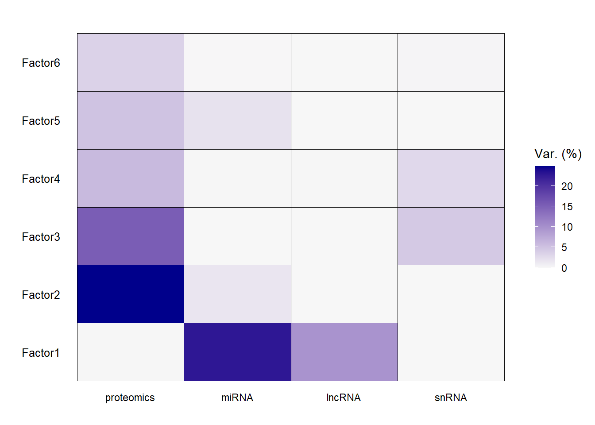
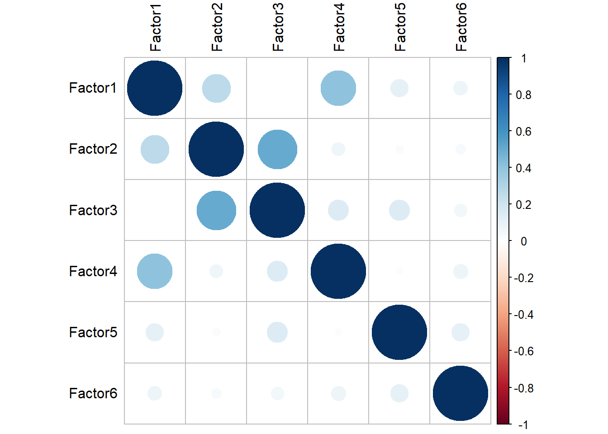
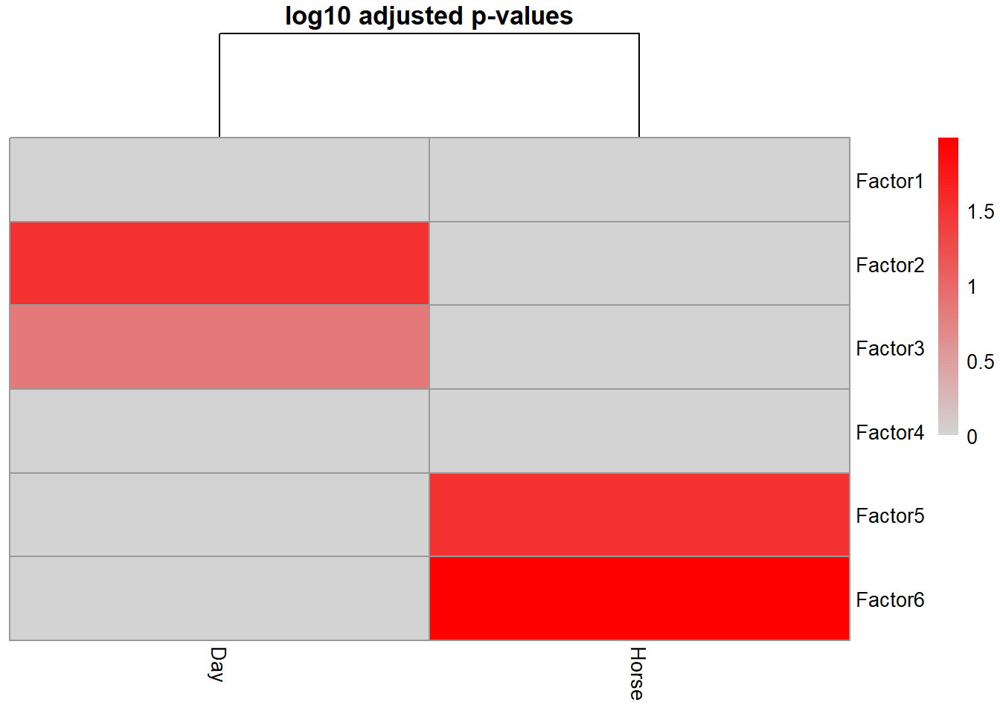
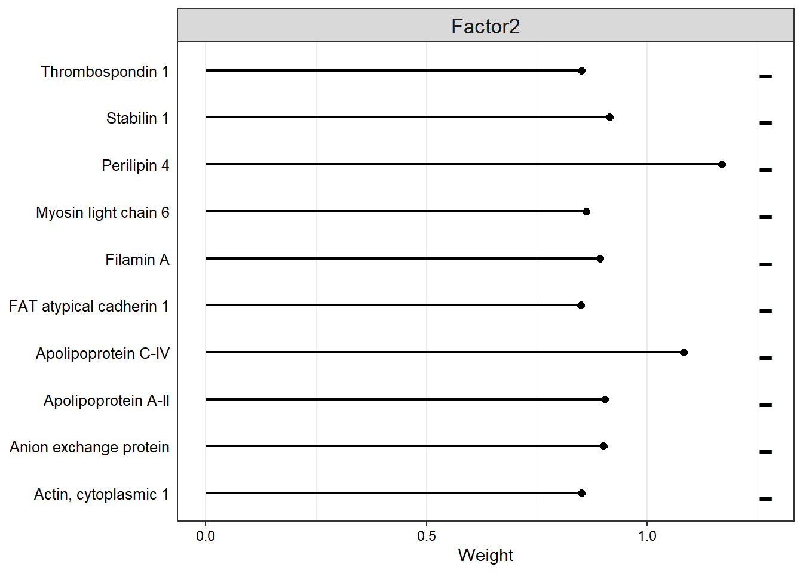

Multi-omics - joint dimensionality reduction
ejjohnson93
2022-09-28
Last updated: 2022-11-08
Checks: 6 1
Knit directory: anderson-peffers_OA/
This reproducible R Markdown analysis was created with workflowr (version 1.7.0). The Checks tab describes the reproducibility checks that were applied when the results were created. The Past versions tab lists the development history.
The R Markdown file has unstaged changes. To know which version of
the R Markdown file created these results, you’ll want to first commit
it to the Git repo. If you’re still working on the analysis, you can
ignore this warning. When you’re finished, you can run
wflow_publish to commit the R Markdown file and build the
HTML.
Great job! The global environment was empty. Objects defined in the global environment can affect the analysis in your R Markdown file in unknown ways. For reproduciblity it’s best to always run the code in an empty environment.
The command set.seed(20220927) was run prior to running
the code in the R Markdown file. Setting a seed ensures that any results
that rely on randomness, e.g. subsampling or permutations, are
reproducible.
Great job! Recording the operating system, R version, and package versions is critical for reproducibility.
Nice! There were no cached chunks for this analysis, so you can be confident that you successfully produced the results during this run.
Great job! Using relative paths to the files within your workflowr project makes it easier to run your code on other machines.
Great! You are using Git for version control. Tracking code development and connecting the code version to the results is critical for reproducibility.
The results in this page were generated with repository version ae6f5f4. See the Past versions tab to see a history of the changes made to the R Markdown and HTML files.
Note that you need to be careful to ensure that all relevant files for
the analysis have been committed to Git prior to generating the results
(you can use wflow_publish or
wflow_git_commit). workflowr only checks the R Markdown
file, but you know if there are other scripts or data files that it
depends on. Below is the status of the Git repository when the results
were generated:
Ignored files:
Ignored: .Rhistory
Ignored: .Rproj.user/
Ignored: analysis/.Rhistory
Untracked files:
Untracked: analysis/images/
Untracked: analysis/references.bib
Untracked: external_imgs/
Untracked: model.hdf5
Untracked: plasma_model.hdf5
Unstaged changes:
Modified: analysis/04_Sequencing_QC_normalisation.Rmd
Modified: analysis/05_Sequencing_EDA.Rmd
Modified: analysis/06_jDR.Rmd
Modified: code/utility-functions.R
Modified: data/plasma_lncRNA_data.rds
Modified: data/plasma_miRNA_data.rds
Modified: data/plasma_sequencing_info.csv
Modified: data/plasma_sequencing_pheno.rds
Modified: data/plasma_snRNA_data.rds
Modified: data/plasma_snoRNA_data.rds
Modified: data/plasma_tRNA_data.rds
Modified: data/sf_lncRNA_data.rds
Modified: data/sf_miRNA_data.rds
Modified: data/sf_sequencing_pheno.rds
Modified: data/sf_snRNA_data.rds
Modified: data/sf_snoRNA_data.rds
Note that any generated files, e.g. HTML, png, CSS, etc., are not included in this status report because it is ok for generated content to have uncommitted changes.
These are the previous versions of the repository in which changes were
made to the R Markdown (analysis/06_jDR.Rmd) and HTML
(docs/06_jDR.html) files. If you’ve configured a remote Git
repository (see ?wflow_git_remote), click on the hyperlinks
in the table below to view the files as they were in that past version.
| File | Version | Author | Date | Message |
|---|---|---|---|---|
| Rmd | e34c9f9 | ejjohnson93 | 2022-11-03 | Updated theme + additional analysis docs |
| Rmd | c63c64f | ejjohnson93 | 2022-11-01 | Sequencing files created |
| html | c63c64f | ejjohnson93 | 2022-11-01 | Sequencing files created |
Load libraries
library(tidyverse)── Attaching packages ─────────────────────────────────────── tidyverse 1.3.1 ──✔ ggplot2 3.3.6 ✔ purrr 0.3.4
✔ tibble 3.1.7 ✔ dplyr 1.0.9
✔ tidyr 1.2.0 ✔ stringr 1.4.0
✔ readr 2.1.2 ✔ forcats 0.5.1── Conflicts ────────────────────────────────────────── tidyverse_conflicts() ──
✖ dplyr::filter() masks stats::filter()
✖ dplyr::lag() masks stats::lag()library(MOFA2)
Attaching package: 'MOFA2'The following object is masked from 'package:stats':
predictLoad data
# Plasma
plasma_pheno <- readRDS("./data/plasma_pheno.rds")
plasma_proteomics_data <- readRDS("./data/plasma_data_norm.rds")
plasma_miRNA_data <- readRDS("./data/plasma_miRNA_data.rds")
plasma_lncRNA_data <- readRDS("./data/plasma_lncRNA_data.rds")
plasma_snRNA_data <- readRDS("./data/plasma_snRNA_data.rds")
# SF
sf_pheno <- readRDS("./data/sf_pheno.rds")
sf_proteomics_data <- readRDS("./data/sf_data_norm.rds")
sf_miRNA_data <- readRDS("./data/sf_miRNA_data.rds")
sf_lncRNA_data <- readRDS("./data/sf_lncRNA_data.rds")
sf_snRNA_data <- readRDS("./data/sf_snRNA_data.rds")MOFA
Plasma
colnames(plasma_pheno)[5] <- "sample"plasma_mofa_dat <- list(proteomics = as.matrix(plasma_proteomics_data),
miRNA = as.matrix(plasma_miRNA_data),
lncRNA = as.matrix(plasma_lncRNA_data),
snRNA = as.matrix(plasma_snRNA_data))Create MOFAojbect:
MOFAobject <- create_mofa(plasma_mofa_dat)Creating MOFA object from a list of matrices (features as rows, sample as columns)...print(MOFAobject)Untrained MOFA model with the following characteristics:
Number of views: 4
Views names: proteomics miRNA lncRNA snRNA
Number of features (per view): 223 56 29 14
Number of groups: 1
Groups names: group1
Number of samples (per group): 26
plot_data_overview(MOFAobject)Modify model parameters:
# Scale views
data_opts <- get_default_data_options(MOFAobject)
data_opts$scale_views <- TRUE
head(data_opts)$scale_views
[1] TRUE
$scale_groups
[1] FALSE
$center_groups
[1] TRUE
$use_float32
[1] FALSE
$views
[1] "proteomics" "miRNA" "lncRNA" "snRNA"
$groups
[1] "group1"# Set number of factors
model_opts <- get_default_model_options(MOFAobject)
model_opts$num_factors <- 6
head(model_opts)$likelihoods
proteomics miRNA lncRNA snRNA
"gaussian" "gaussian" "gaussian" "gaussian"
$num_factors
[1] 6
$spikeslab_factors
[1] FALSE
$spikeslab_weights
[1] TRUE
$ard_factors
[1] FALSE
$ard_weights
[1] TRUE# Set training options
train_opts <- get_default_training_options(MOFAobject)
train_opts$convergence_mode <- "slow"
head(train_opts)$maxiter
[1] 1000
$convergence_mode
[1] "slow"
$drop_factor_threshold
[1] -1
$verbose
[1] FALSE
$startELBO
[1] 1
$freqELBO
[1] 5Prepare MOFA object with modified parameters:
MOFAobject <- prepare_mofa(
object = MOFAobject,
data_options = data_opts,
model_options = model_opts,
training_options = train_opts
)Warning in prepare_mofa(object = MOFAobject, data_options = data_opts,
model_options = model_opts, : Some view(s) have less than 15 features, MOFA will
have little power to to learn meaningful factors for these view(s)....Checking data options...Checking training options...Checking model options...Train model:
outfile <- file.path(getwd(),"plasma_model.hdf5")
MOFAobject.trained <- run_mofa(MOFAobject, outfile)Warning: Output file C:/Users/Emily/Documents/GitHub/anderson-peffers_OA/plasma_model.hdf5 already exists, it will be replacedConnecting to the mofapy2 python package using reticulate (use_basilisk = FALSE)...
Please make sure to manually specify the right python binary when loading R with reticulate::use_python(..., force=TRUE) or the right conda environment with reticulate::use_condaenv(..., force=TRUE)
If you prefer to let us automatically install a conda environment with 'mofapy2' installed using the 'basilisk' package, please use the argument 'use_basilisk = TRUE'+ "C:/Users/Emily/AppData/Local/r-miniconda/condabin/conda.bat" "create" "--yes" "--prefix" "C:/Users/Emily/AppData/Local/r-miniconda/envs/r-reticulate" "python=3.8" "numpy" "--quiet" "-c" "conda-forge"Warning in run_mofa(MOFAobject, outfile): mofapy2_0.6.4 is not detected in the
specified python binary, see reticulate::py_config(). Setting use_basilisk =
TRUE...Connecting to the mofapy2 package using basilisk.
Set 'use_basilisk' to FALSE if you prefer to manually set the python binary using 'reticulate'.Warning in .quality_control(object, verbose = verbose): Factor(s) 1, 2 are strongly correlated with the total number of expressed features for at least one of your omics. Such factors appear when there are differences in the total 'levels' between your samples, *sometimes* because of poor normalisation in the preprocessing steps.Add phenotype data to the model:
samples_metadata(MOFAobject.trained) <- plasma_phenoVisualise variance explained:
plot_variance_explained(
MOFAobject.trained,
x = "view",
y = "factor",
plot_total = T
)[[1]]
[[2]]Majority is from proteomics data - likely due to the higher number of features.
Plot correlation between factors:
plot_factor_cor(MOFAobject.trained)Correlation between factors and metadata:
correlate_factors_with_covariates(MOFAobject.trained,
covariates = c("Day", "Horse"),
plot="log_pval"
)Warning in correlate_factors_with_covariates(MOFAobject.trained, covariates =
c("Day", : There are non-numeric values in the covariates data.frame, converting
to numeric...
Factor 1 is correlated with day. Factors 5 and 6 are correlated with horse.
plot_top_weights(MOFAobject.trained,
view = "proteomics",
factor = 1,
nfeatures = 5,
scale = T,
abs = T
)
plot_weights(MOFAobject.trained,
#view = "proteomics",
factor = 1,
nfeatures = 15, # Top number of features to highlight
scale = T # Scale weights from -1 to 1
)
plot_top_weights(MOFAobject.trained,
view = "miRNA",
factor = 2,
nfeatures = 5,
scale = T,
abs = T
)
plot_factors(MOFAobject.trained,
factors = c(1,2,3),
color_by = "Day"
) Registered S3 method overwritten by 'GGally':
method from
+.gg ggplot2
plot_data_heatmap(MOFAobject.trained,
view = "proteomics",
factor = 1,
features = 25,
cluster_rows = TRUE, cluster_cols = TRUE,
show_rownames = TRUE, show_colnames = TRUE,
scale = "row",
denoise = TRUE
)
p <- plot_factors(MOFAobject.trained,
factors = c(1,2),
color_by = "Day",
shape_by = "Horse",
dot_size = 2.5,
show_missing = T
)
p <- p +
geom_hline(yintercept=-1, linetype="dashed") +
geom_vline(xintercept=(-0.5), linetype="dashed")
sessionInfo()R version 4.2.0 (2022-04-22 ucrt)
Platform: x86_64-w64-mingw32/x64 (64-bit)
Running under: Windows 10 x64 (build 19044)
Matrix products: default
locale:
[1] LC_COLLATE=English_United Kingdom.utf8
[2] LC_CTYPE=English_United Kingdom.utf8
[3] LC_MONETARY=English_United Kingdom.utf8
[4] LC_NUMERIC=C
[5] LC_TIME=English_United Kingdom.utf8
attached base packages:
[1] stats graphics grDevices utils datasets methods base
other attached packages:
[1] MOFA2_1.6.0 forcats_0.5.1 stringr_1.4.0 dplyr_1.0.9
[5] purrr_0.3.4 readr_2.1.2 tidyr_1.2.0 tibble_3.1.7
[9] ggplot2_3.3.6 tidyverse_1.3.1
loaded via a namespace (and not attached):
[1] nlme_3.1-157 matrixStats_0.62.0 fs_1.5.2
[4] lubridate_1.8.0 filelock_1.0.2 RColorBrewer_1.1-3
[7] httr_1.4.3 rprojroot_2.0.3 tools_4.2.0
[10] backports_1.4.1 bslib_0.3.1 utf8_1.2.2
[13] R6_2.5.1 HDF5Array_1.24.1 uwot_0.1.11
[16] DBI_1.1.2 BiocGenerics_0.42.0 colorspace_2.0-3
[19] rhdf5filters_1.8.0 withr_2.5.0 GGally_2.1.2
[22] mnormt_2.1.0 tidyselect_1.1.2 compiler_4.2.0
[25] git2r_0.30.1 cli_3.3.0 rvest_1.0.2
[28] basilisk.utils_1.8.0 xml2_1.3.3 DelayedArray_0.22.0
[31] labeling_0.4.2 sass_0.4.1 scales_1.2.0
[34] psych_2.2.5 rappdirs_0.3.3 digest_0.6.29
[37] rmarkdown_2.14 basilisk_1.8.0 pkgconfig_2.0.3
[40] htmltools_0.5.2 MatrixGenerics_1.8.0 highr_0.9
[43] dbplyr_2.2.0 fastmap_1.1.0 rlang_1.0.2
[46] readxl_1.4.0 rstudioapi_0.13 farver_2.1.0
[49] jquerylib_0.1.4 generics_0.1.2 jsonlite_1.8.0
[52] magrittr_2.0.3 Matrix_1.4-1 Rhdf5lib_1.18.2
[55] Rcpp_1.0.8.3 munsell_0.5.0 S4Vectors_0.34.0
[58] fansi_1.0.3 reticulate_1.25 lifecycle_1.0.1
[61] stringi_1.7.6 whisker_0.4 yaml_2.3.5
[64] Rtsne_0.16 rhdf5_2.40.0 plyr_1.8.7
[67] grid_4.2.0 ggrepel_0.9.1 parallel_4.2.0
[70] promises_1.2.0.1 crayon_1.5.1 dir.expiry_1.4.0
[73] lattice_0.20-45 haven_2.5.0 cowplot_1.1.1
[76] hms_1.1.1 knitr_1.39 pillar_1.7.0
[79] reshape2_1.4.4 stats4_4.2.0 reprex_2.0.1
[82] glue_1.6.2 evaluate_0.15 modelr_0.1.8
[85] png_0.1-7 vctrs_0.4.1 tzdb_0.3.0
[88] httpuv_1.6.5 cellranger_1.1.0 gtable_0.3.0
[91] reshape_0.8.9 assertthat_0.2.1 xfun_0.31
[94] broom_0.8.0 later_1.3.0 pheatmap_1.0.12
[97] IRanges_2.30.0 corrplot_0.92 workflowr_1.7.0
[100] ellipsis_0.3.2 here_1.0.1